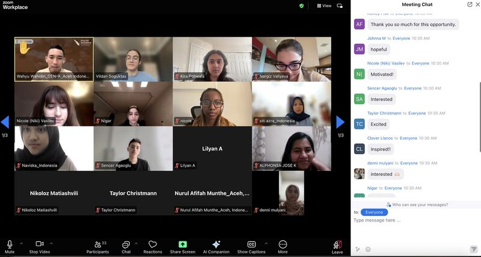
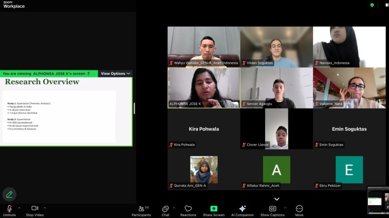
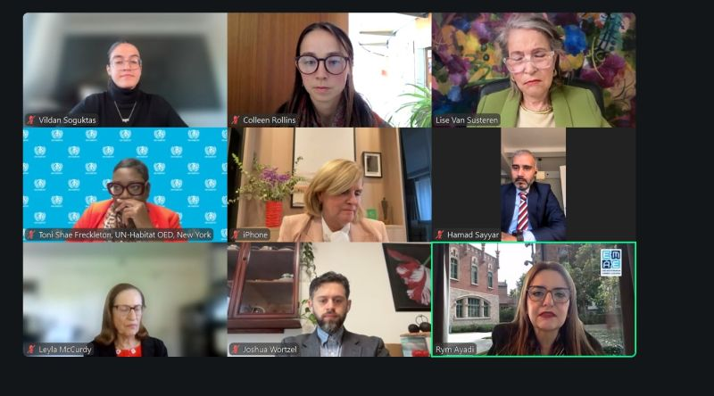
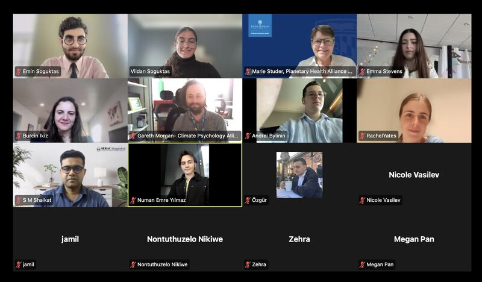

Events
Upcoming gatherings, webinars, and past highlights
Upcoming Events
Join us at our next gatherings
Healthy Planet, Healthy Minds and Brains: Science for Resilient Cities and Communities
A UN side event exploring the intersection of planetary health, neuroscience, and urban resilience. We'll discuss how environmental degradation impacts brain health and what cities can do to protect their communities.
Learn MoreYouth & Eco-Anxiety: Building Resilience Through Community
A global webinar exploring how young people can support each other through climate distress. Featuring panel discussions with mental health experts and youth leaders.
RegisterClub Leadership Training: Summer Cohort
An intensive leadership training program for new and existing planetary health club leaders. Learn how to organize events, build teams, and create lasting impact at your institution.
ApplyPast Events
Highlights from our previous gatherings
2026 UN ECOSOC Youth Forum
Youth for Planetary Health was represented at the only annual UN youth conference in New York City, under the theme "Innovate, Unite and Transform: Youth Shaping the Road to 2030." We advocated for stronger youth participation in planetary health policy with a focus on SDG 11.
CompletedIntroduction to Planetary Health: A Youth Perspective
Our flagship introductory webinar covering the core concepts of planetary health, the role of youth, and how to get involved in the movement. Attended by 150+ participants from 20 countries.
CompletedSustainable Swap — Earth Day Prep Workshop
A collaborative workshop where club members planned their Earth Day "Sustainable Swap" projects — exchanging single-use items for eco-friendly alternatives within their school communities.
CompletedEvent Photos
Moments from our meetings, events, and collaborative sessions






Don't miss our next event
Subscribe to our newsletter to stay updated on upcoming webinars, workshops, and gatherings.